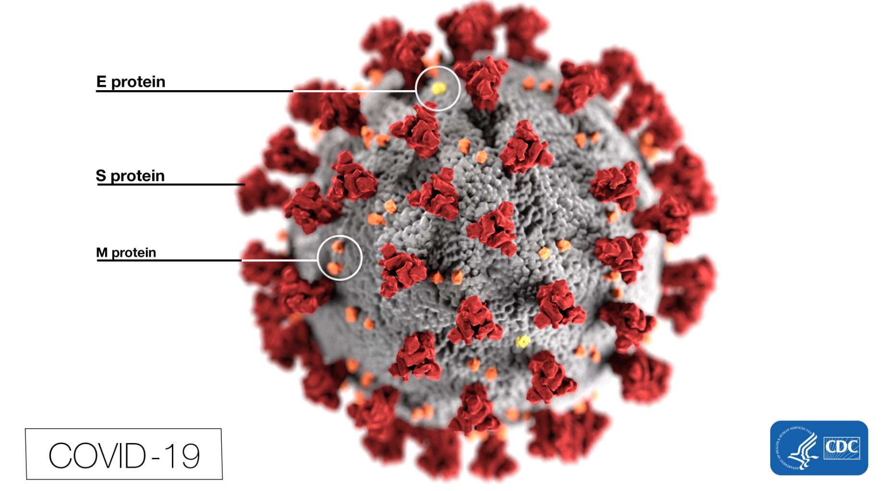

What Is COVID-19?
A coronavirus is a kind of common virus that causes an infection in your nose, sinuses, or upper throat. Most coronaviruses aren't dangerous.
In early 2020, after a December 2019 outbreak in China, the World Health Organization identified SARS-CoV-2 as a new type of coronavirus.
The outbreak quickly spread around the world.
COVID-19 is a disease caused by SARS-CoV-2 that can trigger what doctors call a respiratory tract infection.
It can affect your upper respiratory tract (sinuses, nose, and throat) or lower respiratory tract (windpipe and lungs).
It spreads the same way other coronaviruses do, mainly through person-to-person contact. Infections range from mild to deadly.
SARS-CoV-2 is one of seven types of coronavirus, including the ones that cause severe diseases like Middle East respiratory syndrome (MERS) and sudden acute respiratory syndrome (SARS).
The other coronaviruses cause most of the colds that affect us during the year but aren’t a serious threat for otherwise healthy people.
Is there more than one strain of SARS-CoV-2?
It’s normal for a virus to change, or mutate, as it infects people. A Chinese study of 103 COVID-19 cases suggests the virus that causes it has done just that.
They found two strains, which they named L and S.
The S type is older, but the L type was more common in early stages of the outbreak. They think one may cause more cases of the disease than the other, but they’re still working on what it all means.
Strains of Coronavirus
How Many Coronaviruses Are There?
Coronaviruses didn’t just pop up recently. They’re a large family of viruses that have been around for a long time. Many of them can make people ill with sniffles or coughing.
Before the SARS-CoV-2 outbreak, coronaviruses were thought to cause only mild respiratory infections in people.
The new (or “novel”) coronavirus is one of several known to infect humans. It’s probably been around for some time in animals.
Sometimes, a virus in animals crosses over into people. That’s what scientists think happened here. So this virus isn’t new to the world, but it is new to humans.
When scientists found out that it was making people sick in 2019, they named it as a novel coronavirus.